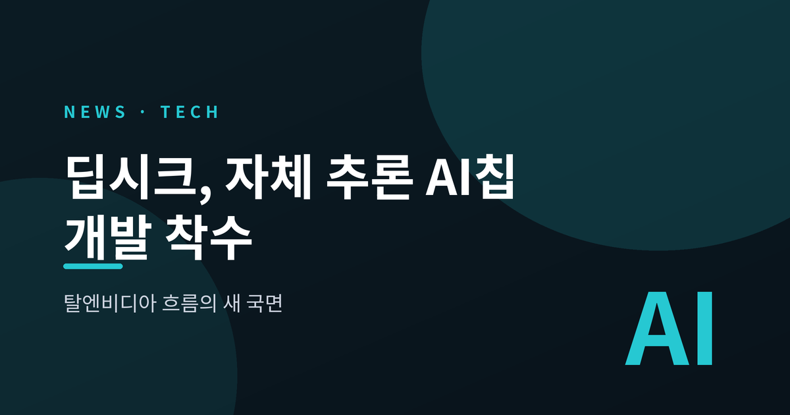
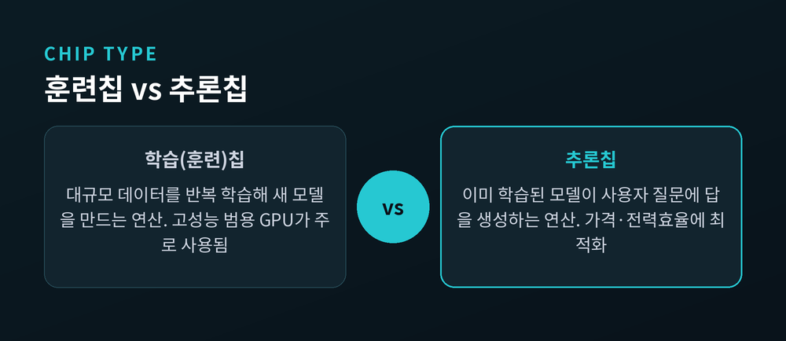
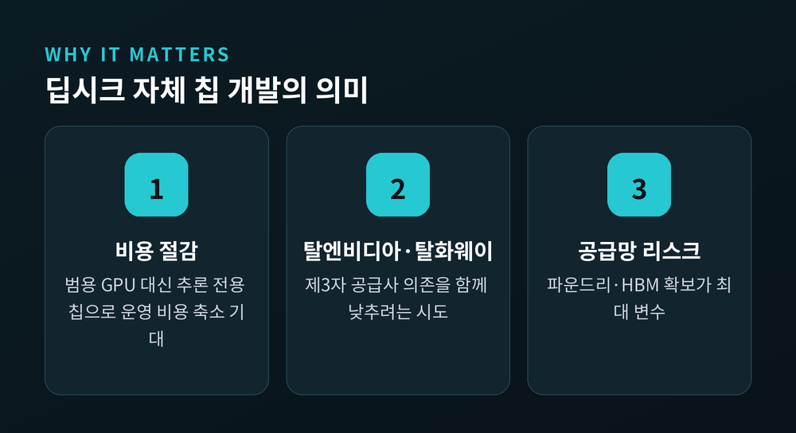
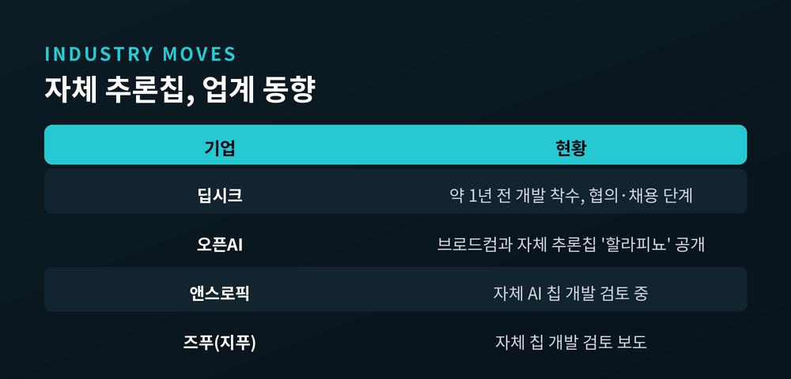

[산업·IT] 딥시크 자체 추론 AI칩 개발 착수, 탈엔비디아 새 국면

중국 AI 스타트업 딥시크가 자체 AI 반도체 개발에 나선 것으로 전해졌습니다. 로이터 보도에 따르면 이번 칩은 모델 훈련용이 아니라 추론(inference) 전용으로, 엔비디아·화웨이 의존도를 낮추려는 시도로 풀이됩니다. 아래 세 줄로 먼저 정리해 드립니다.
- 딥시크, 약 1년 전부터 추론 특화 AI칩 개발 착수·반도체 인력 채용 확대
- 범용 GPU 대비 가격·전력효율 노린 전략, 엔비디아·화웨이 동시 탈피 시도
- 파운드리·HBM 등 공급망 확보가 관건, 미·중 반도체 경쟁 새 국면 진입
무슨 일인가
로이터는 2026년 7월 7일, 복수의 소식통을 인용해 딥시크가 자체 AI 칩을 개발 중이라고 보도했습니다. 이 소식은 블룸버그, 저팬타임스, 대만 타이베이타임스 등 해외 매체와 국내 언론을 통해 잇달아 확인됐습니다.
핵심은 용도입니다. 새 모델을 학습시키는 훈련용 칩이 아니라, 학습이 끝난 모델이 사용자 질문에 답을 만들어내는 추론 단계에 특화된 프로세서로 알려졌습니다.
프로젝트는 약 1년 전 시작된 것으로 전해집니다. 딥시크는 칩 설계 업체, 파운드리, 메모리 공급사와 협의를 진행해왔고, 최근 수개월간 반도체 설계 인력 채용도 늘려온 것으로 알려졌습니다.
채용 방식도 눈에 띕니다. 공개 채용 공고보다는 업계 인맥을 통한 비공개 방식으로 엔지니어를 확보해온 것으로 전해집니다. 아직 시제품이나 구체적인 성능 지표는 공개되지 않았습니다. 확정된 파운드리 파트너 역시 공식 발표는 없는 상태입니다.

왜 중요한가
추론칩은 서비스 운영 비용과 직결됩니다. 모델을 한 번 훈련시키는 것과 달리, 추론은 이용자가 몰릴 때마다 반복적으로 일어나는 연산입니다. 서비스가 커질수록 추론 비용은 누적됩니다. 범용 GPU 대신 추론에 맞춘 전용 칩을 쓰면 가격과 전력 소비 면에서 이점을 볼 수 있다는 게 업계의 판단입니다.
이번 움직임은 미국의 대중 반도체 수출통제와 맞물려 있습니다. 최첨단 엔비디아 칩 확보가 제한된 상황에서, 딥시크는 엔비디아뿐 아니라 화웨이 등 제3의 공급사에 대한 의존까지 줄이려는 것으로 해석됩니다. 국내 매체는 이를 두고 "탈엔비디아를 넘어선 탈화웨이 시도"라는 해설도 내놓았습니다.
다만 넘어야 할 산도 분명합니다. 경쟁력 있는 AI 칩을 설계하고 양산하기까지는 통상 수년의 시간과 대규모 자본이 필요합니다. 파운드리 후보로 중국 SMIC가 거론된다는 보도도 있으나, 로이터 원문이 이를 명시적으로 확정했는지는 분명치 않아 어디까지나 유력한 추정으로 봐야 합니다. SMIC는 첨단 공정 장비 확보에 제약이 있고, 7나노급 공정에 머물러 있다는 평가가 일반적입니다. 고대역폭메모리(HBM) 수급 역시 미국 수출 규제로 녹록지 않은 상황입니다.

앞으로 전망
이런 흐름은 딥시크만의 이야기가 아닙니다. 오픈AI는 지난달 브로드컴과 함께 만든 첫 자체 추론칩을 공개했고, 앤스로픽도 자체 칩 개발을 검토 중인 것으로 알려졌습니다. 중국 내에서도 즈푸(지푸) 등 다른 AI 기업이 비슷한 행보를 보이고 있습니다.
즉 자체 추론칩 확보는 AI 기업들이 클라우드·범용 GPU 의존에서 벗어나려는 공통된 흐름으로 읽힙니다. 다만 딥시크의 경우 공급망 제약이라는 변수가 더 크게 작용할 수 있습니다. 미국 기업은 자국 파운드리와 최신 메모리에 접근할 수 있지만, 딥시크는 그렇지 못한 처지이기 때문입니다.
현재로선 협의와 채용 단계에 머물러 있어, 실제 양산과 상용화까지는 시간이 더 필요할 것으로 보입니다. 중국 외 글로벌 반도체 시장에 미치는 당장의 영향은 제한적이라는 분석도 함께 나옵니다. 다만 중장기적으로는 중국 AI 산업 전반의 공급망 자립 시도로 이어질 가능성도 열려 있습니다.

정리하면 이렇습니다. 딥시크의 자체 추론칩 개발은 아직 초기 단계이지만, 미·중 반도체 경쟁의 구도를 다시 한번 보여주는 사례입니다. 성공 여부는 결국 공급망을 얼마나 확보하느냐에 달려 있습니다.
"칩 설계보다 어려운 것은 결국 공급망 확보다" — 이번 소식이 남기는 한 줄입니다. 딥시크의 다음 행보가 어디로 향할지, 계속 지켜볼 일입니다.